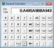

Resources
A collection of tools and resources for working with the dozenal system.
Dozenal and Decimal Solitaire Games
Dozenal and Decimal Solitaire Games
Game
Practice in dozenal (and decimal) arithmetic.
Paul Rapoport
Web
Dozenal and Decimal Solitaire Games
A Converter
A Converter
Utility
An online converter for TGM, UUS, and other metric systems.
Takashi Suga
Web
A Converter
Chord Dialer
Chord Dialer
Educational
A simple printable, craftable chord dialer, using dozenal numbers to identify harmonious chords
Troy (Donald Hammond)
Chord Dialer
LaTeX Package: dozenal
dozenal
Font
Fonts and tools for dozenal in TeX and LaTeX
Donald P. Goodman III
4.0
Download from CTAN
Dozenal OEIS Scripts
Dozenal OEIS
Utility
Permits viewing and searching OEIS in dozenal.
James Wood
1.2.1
Dozenal OEIS
Alternative Base Systems Worksheets
Alternative Base Systems Worksheets
Educational
Instructional sheets and worksheets about non-decimal bases, devised for a program offered to a conference of the ASEE
Jen Seron and Dan Simon
https://dozenal.org/drupal/sites_bck/default/files/asee_11e9_dsa.zip
KDE Desktop Dozenal Clock
dozenal-tgm-clock
Utility
Plasma applet for KDE desktop featuring a TGM (hour-based) clock and dozenal date.
Donald P. Goodman III
https://dozenal.org/drupal/sites_bck/default/files/dozenal-tgm-clock_0.zip
Dozensonline Dozenal Userscripts
Dozensonline Dozenator
Utility
Dozenizes and provides other useful tools for the DozensOnline forum.
James Wood
1.6.4
Dozensonline Dozenator
TGM Measurement Tools
TGM Measurement Tools
Guide
Sheets and guides for easily producing TGM measurement tools, like rulers, scales, measuring spoons and cups, and so forth
Donald P. Goodman III
https://dozenal.org/drupal/content/tgm_tool_files.html
Treisaran SVG Fonts for Pitman Characters
Treisaran SVG Fonts for Pitman Characters
font
Treisaran's SVG fonts, with Pitman character matching a variety of free fonts
Treisaran
https://dozenal.org/drupal/sites_bck/default/files/pitmansvg_treisaran.zip
UncialClock Deluxe
UncialClock Deluxe
Utility
A Java program displaying three types of dozenal clock, analog and digital.
John Kodegadulo
Download from Sourceforge
ZCalculator
